2.3.6.2. Content¶
| Inheritance diagram: | |
|---|---|
Variables and utilities about colors and color maps
List of all available colormaps in matplotlib, including VACUMM colormaps
(plotted with plot_cmaps())
-
RGB(arg)¶ Returns an RGB tuple of three floats from 0-1.
arg can be an RGB or RGBA sequence or a string in any of several forms:
- a letter from the set ‘rgbcmykw’
- a hex color string, like ‘#00FFFF’
- a standard name, like ‘aqua’
- a string representation of a float, like ‘0.4’, indicating gray on a 0-1 scale
if arg is RGBA, the A will simply be discarded.
-
RGBA(arg, alpha=None)¶ Returns an RGBA tuple of four floats from 0-1.
For acceptable values of arg, see
to_rgb(). In addition, if arg is “none” (case-insensitive), then (0,0,0,0) will be returned. If arg is an RGBA sequence and alpha is not None, alpha will replace the original A.
-
class
RangedLinearSegmentedColormap(name, segmentdata, N=256, start=0.0, stop=1.0)[source]¶ Bases:
matplotlib.colors.ColormapSee also: matplotlib.colors.LinearSegmentedColormap-
is_gray()¶
-
reversed(name=None)¶ Make a reversed instance of the Colormap.
Note
Function not implemented for base class.
- name : str, optional
- The name for the reversed colormap. If it’s None the name will be the name of the parent colormap + “_r”.
See
LinearSegmentedColormap.reversed()andListedColormap.reversed()
-
set_bad(color=u'k', alpha=None)¶ Set color to be used for masked values.
-
set_over(color=u'k', alpha=None)¶ Set color to be used for high out-of-range values. Requires norm.clip = False
-
set_under(color=u'k', alpha=None)¶ Set color to be used for low out-of-range values. Requires norm.clip = False
-
-
class
Scalar2RGB(vminmax, cmap=None)[source]¶ Bases:
objectConverter from scalar to colors
Params: - vminmax: Either an array or a tuple of (min,max).
- cmap, optional: A colormap.
Example: >>> cmap = cmap_srs(['b', 'r']) >>> c = Scalar2RGB((1.5, 20.6), cmap) >>> print c(1.5, alpha=.5), c(10), c(20.6), c(50) (0.0,0.0,1.0,0.5) (0.38,0.0,0.61) (1.0,0.0,0.0) (1.0,0.0,0.0) >>> print c([1.5,10]) [[ 0. 0. 1. ] [ 0.38627451 0. 0.61372549]]
-
class
StepsNorm(levels, log=False, masked=True, **kwargs)[source]¶ Bases:
matplotlib.colors.NormalizeNormalize a given value to the 0-1 range on a stepped linear or log scale
See tutorial Utilisation d’une palette à paliers irréguliers
-
autoscale(A)¶ Set vmin, vmax to min, max of A.
-
autoscale_None(A)¶ autoscale only None-valued vmin or vmax.
-
static
process_value(value)[source]¶ Homogenize the input value for easy and efficient normalization.
value can be a scalar or sequence.
Returns result, is_scalar, where result is a masked array matching value. Float dtypes are preserved; integer types with two bytes or smaller are converted to N.float32, and larger types are converted to N.float. Preserving float32 when possible, and using in-place operations, can greatly improve speed for large arrays.
Experimental; we may want to add an option to force the use of float32.
-
scaled()¶ return true if vmin and vmax set
-
-
anamorph_cmap(cmap, transform, name=None)[source]¶ Tranform a colormap with anamorphim
Params: - cmap: Colormap.
- transform: Sorted array of float between 0 and 1.
- name: name of the colormap
-
auto_cmap_topo(varminmax=(0.0, 1.0), gzoom=1.0, xzoom=1.0, **kwargs)[source]¶ Adjusted
cmap_topo()colormap so that altitude 0 fall on center of full colormap by defautParams: varminmax: Define the min and max of topo ; it can be either :
- a topo variable (array) from which min and max are computed
- a tuple of (min, max) fo topo
gzoom, optional: Global zoom in the colormap (>1.)
xzoom, optional: Zoom out
- the land colormap if more ocean,
- the ocean colormap if more land.
-
bistre= (0.9609375, 0.87109375, 0.703125)¶ Land color
-
change_luminosity(c, f)[source]¶ Change the luminosity
Params: - c: color
- f: Factor between 0 and 1 with null impact at 0.5
-
change_saturation(c, f)[source]¶ Change the saturation in HSV mode
Params: - c: Color
- f: Factor between 0 and 1. Null effect at 0.5.
-
change_value(c, f)[source]¶ Change de value in HSV mode
Params: - c: Color
- f: Factor between 0 and 1. Null effect at 0.5.
-
cmap_ajete(w=0.02, name='vacumm_ajete', **kwargs)[source]¶ Jet colormap with white at center and extremes, for anomaly plots
Sample: 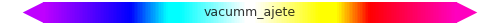
-
cmap_ajets(wcol='w', name='vacumm_ajets', **kwargs)[source]¶ Jet colormap with smoothed steps and white at center (for anomalies)
Params: - wcol, optional: color of “white”
- other options are passed to
cmap_smoothed_regular_steps()
Sample: 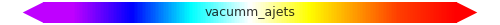
-
cmap_bathy(start=0.0, stop=1.0, name='vacumm_bathy', **kwargs)[source]¶ Colormap for bathymetry maps
Sample:
-
cmap_br(sep=0.5, name='vacumm_br', **kwargs)[source]¶ Blue->red colormap
Params: - sep, optional: relative position of the blue/red transition in the map [default: 0.5]
Sample: 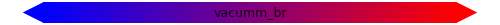
-
cmap_br2(sep=0.5, white=0.7, name='vacumm_br2', **kwargs)[source]¶ Blue->light blue|light red-> red
Params: - sep, optional: relative position of the blue/red transition in the map [default: 0.5]
- white, optional: Strenght of the whitening (see
whiten()).
Sample:
-
cmap_bwr(wpos=0.5, wcol='w', name='vacumm_bwr')[source]¶ Blue->white->red colormap
Params: - white: relative position of white color in the map [default: 0.5]
Sample: 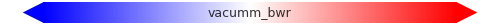
-
cmap_bwre(wpos=0.5, gap=0.1, wcol='w', name='vacumm_bwre', **kwargs)[source]¶ Returns a violet->blue->white->red colormap->yellow
- white, optional: relative position of white color in the map [default: 0.5]
- gap, optional: Relative width of the pure central white gap [default: 0.1]
Sample: 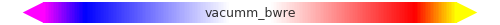
-
cmap_chla(name='vacumm_chla', smoothed=True, **kwargs)[source]¶ Colormap for Chlorophyll A
Sample: Source: IDL code from F. Gohin.
-
cmap_custom(colors, name='mycmap', ncol=256, ranged=False, register=True, **kwargs)[source]¶ Quick colormap creation
Params: - colors: Like [(color1, position1),(color2, position2), etc…] or dict(red=((pos1,r1a,r1b), (pos2,r2a,r2b)),etc…)
- ncol/N: Discretization.
- register: Register the colormap into matplotlib to be accessible with its name?
-
cmap_dynamic_cmyk_hymex(name='vacumm_dynamic_cmyk_hymex', **kwargs)[source]¶ DYNAMIC_CMYK Colormap for HYMEX
Note
This colormap is registered in matplotlib under the name “vacumm_dynamic_cmyk_hymex”.
Sample:
-
cmap_eke(name='vacumm_eke', **kwargs)[source]¶ Colormap for Eddy Kinetic Energy (from Barnier et al., 2006)
Added by G. Charria
-
cmap_gmt(name, register=True, **kwargs)[source]¶ Get a colormap from GMT
Params: - name: GMT colormap name OR .cpt file name.
See also:
-
cmap_grey(start=0, end=1.0, name='vacumm_grey', **kwargs)[source]¶ Grey colormap from position
startto positionendSample:
-
cmap_jets(name='vacumm_jets', **kwargs)[source]¶ Jet colormap with smoothed steps
Params: Passed to
cmap_smoothed_regular_steps()Samples: - 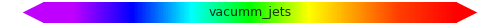
- 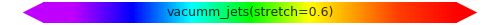
- 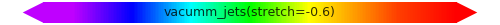
See also:
-
cmap_land(start=0.0, stop=1.0, name='vacumm_land', **kwargs)[source]¶ Colormap for land maps
Params: - start/stop, optional: Positions for a zoom in colormap.
Sample:
-
cmap_magic(n=None, stretch=0.4, mode='normal', white='.95', name='vacumm_magic', **kwargs)[source]¶ Magic rainbow colormap
Based upon
cmap_rainbow()with specificities:nmay be for example an array of levels.smoothedis set toFalseby default.stretchis set negative by default (-attenuation).
Params: - n, optional: Number of colors used or object with a length (like an array of levels).
- Extra keywords are passed to
rainbow()
Example: >>> ssta = MV2.arange(-2.6, 3.1, .1) >>> cmap = cmap_magic(ssta, anomaly=True) >>> cmap = cmap_magic(len(ssta))
Samples: - 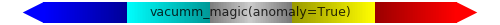
-
cmap_mg(*args, **kwargs)[source]¶ Shortcut to
cmap_magic()
-
cmap_ncview_rainbow(name='vacumm_ncview_rainbow', **kwargs)[source]¶ Colormap Rainbow from Ncview (http://fossies.org/dox/ncview-2.1.2/colormaps__rainbow_8h_source.html)
Source: http://fossies.org/dox/ncview-2.1.2/colormaps__rainbow_8h_source.html (ncview-2.1.2, G. Charria)
-
cmap_nice_gfdl(name='vacumm_nice_gfdl', **kwargs)[source]¶ GFDL colormap (http://www.gfdl.noaa.gov/visualization)
Source: http://www.ncl.ucar.edu/Document/Graphics/ColorTables/nice_gfdl.shtml (included by G. Charria)
-
cmap_pe(red=0.8, name='vacumm_pe', **kwargs)[source]¶ Colomap for positive extremes (white->grey->red)
Sample:
-
cmap_previmer(name='vacumm_previmer', **kwargs)[source]¶ Colormap from PREVIMER Website (http://www.previmer.org)
Sample: Source: http://www.previmer.org (F. Lecornu, G. Charria)
-
cmap_previmer2(name='vacumm_previmer2', **kwargs)[source]¶ Colormap from PREVIMER Website (http://www.previmer.org)
Same as
cmap_previmer()but extremes are used forset_under()and :meth`set_over`.Sample: Source: http://www.previmer.org (F. Lecornu, G. Charria)
-
cmap_rainbow(n=None, name='vacumm_rainbow', smoothed=True, mode='auto', **kwargs)[source]¶ Rainbow colormap
Params: - n, optional: Number of colors used (keyword passed to
rainbow()). - stretcher, first, last, middle, optional: See
rainbow(). - rainbow_<param>, optional:
<param>is passed to func:rainbow - Extra keywords are passed to
cmap_rs()orcmap_srs()
Example: >>> cmap = cmap_magic(10, first='.5', mode='last') >>> cmap = cmap_magic([5.,6.,7,8,9], stretcher='reduced_green')
Sample: 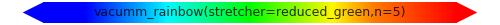 - n, optional: Number of colors used (keyword passed to
-
cmap_rainbow_sst_hymex(name='vacumm_rainbow_sst_hymex', **kwargs)[source]¶ RAINBOW_SST Colormap for HYMEX
Note
This colormap is registered in matplotlib under the name “vacumm_rainbow_sst_hymex”.
Sample:
-
cmap_rb(*args, **kwargs)[source]¶ Shortcut to
cmap_rainbow()
-
cmap_red_tau_hymex(name='vacumm_red_tau_hymex', **kwargs)[source]¶ RNB2 Colormap for HYMEX
Note
This colormap is registered in matplotlib under the name “vacumm_red_tau_hymex”.
Sample: 
-
cmap_regular_steps(colors, steptype='stair', **kwargs)[source]¶ Colormap by regular steps
Params: - cols: [col1,col2,…]
- stretch, optional: Color darkening (<0) or whitening within steps [default: -.6]
- steptype, optional: ‘center’, ‘stair’ or ‘bounds’ [default: ‘center’]
- Other keywords are passed to
cmap_steps()
See also: cmap_steps()cmap_smoothed_steps()cmap_smoothed_regular_steps()
-
cmap_rnb2_hymex(name='vacumm_rnb2_hymex', **kwargs)[source]¶ RNB2 Colormap for HYMEX
Note
This colormap is registered in matplotlib under the name “vacumm_rnb2_hymex”.
Sample:
-
cmap_rs(*args, **kwargs)[source]¶ Shortcut to
cmap_regular_steps()
-
cmap_rs(*args, **kwargs)[source] Shortcut to
cmap_regular_steps()
-
cmap_smoothed_regular_steps(colors, steptype='center', **kwargs)[source]¶ Smoothed regular steps
Params: - colors: [(r1,g1,b1),…]
- Other keywords are passed to
cmap_smoothed_steps()
See also: cmap_steps()cmap_smoothed_steps()cmap_regular_steps()(cmap_regular_jets()for an example)
-
cmap_smoothed_steps(colors, stretch=None, rstretch=0, lstretch=0, name='vacumm_css', asdict=False, **kwargs)[source]¶ Smoothed steps
Params: - colors, optional: Central positions for each colors [(col1,pos1),…]
See also: cmap_steps()cmap_regular_steps()cmap_smoothed_regular_steps()
-
cmap_srs(*args, **kwargs)[source]¶ Shortcut to
cmap_smoothed_regular_steps()
-
cmap_ss(*args, **kwargs)[source]¶ Shortcut to
cmap_smoothed_steps()
-
cmap_ssec(name='vacumm_ssec', **kwargs)[source]¶ Colormap from Ncview (http://fossies.org/dox/ncview-2.1.2/colormaps__ssec_8h_source.html)
Source: http://fossies.org/dox/ncview-2.1.2/colormaps__ssec_8h_source.html (ncview-2.1.2, G. Charria)
-
cmap_steps(cols, stretch=None, lstretch=0.0, rstretch=0.0, keepc=None, name='cmap_steps', **kwargs)[source]¶ Colormap by steps
Params: - cols: [(col1,pos1),(col2,pos2),…]
- lstretch, optional: Color darkening (<0) or whitening at start of steps (left)
- rstretch, optional: Same but at end of steps (right)
- keepc, optional: If
lstretchandrstretchare both different from zero, it keeps center of steps intact, else it becomes a mean of left and right. - ncol/N: Discretization.
.See also:
-
cmap_topo(start=0.0, stop=1.0, name='vacumm_topo', zero=0.5, over='k', under='#eeeeff', bad='0.5', **kwargs)[source]¶ Colormap for bathy+land maps
Params: - start/stop, optional: Positions for a zoom in colormap.
- zero, optional: Position of 0-depth color.
- over, optional: Color for values over maximal range
(see
set_over()). - under, optional: Color for values under maximal range
(see
set_under()). - bad, optional: Color for bad values
(see
set_bad()).
Sample: 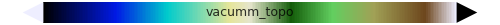 See also:
-
cmap_white_centered_hymex(name='vacumm_white_centered_hymex', **kwargs)[source]¶ RNB2 Colormap for HYMEX
Note
This colormap is registered in matplotlib under the name “vacumm_white_centered_hymex”.
Sample:
-
cmap_wjet(wcol='.95', smoothed=True, name='vacumm_wjet', **kwargs)[source]¶ jet colormap with white (or another color) at beginning
Sample:
-
cmap_wjets(wcol='.95', name='vacumm_wjets', **kwargs)[source]¶ White jet colormap with smoothed steps
Params: - wcol, optional: color of “white”
- other options are passed to
cmap_smoothed_regular_steps()
Sample:
-
cmap_wre(name='vacumm_wre', **kwargs)[source]¶ White->red->yellow colormap for positive extremes
Sample:
-
cmaps_gmt(names=True)[source]¶ List available GMT colormaps
See also: cmap_gmt()print_cmaps_gmt()get_cmap()
-
cmaps_mpl(vacumm=True, gmt=True, names=True)[source]¶ List available registered colormaps available directly from Matplotlib
See also: get_cmap()
-
cmaps_registered(include=None, exclude=None, names=True)[source]¶ List colormap registered in matplotlib
Params: - include: Include only colormaps that have one of these prefixes.
- include: Exclude colormaps that have one of these prefixes.
- names: Return names OR colormaps.
-
cmaps_vacumm(names=True)[source]¶ List available VACUMM colormaps
See also: get_cmap()
-
darken(c, f)[source]¶ Darken a color ‘c’ by a factor ‘f’ (max when f=1)
Params: - c: Color
- f: Factor between 0 and 1 with null impact at 0
Sample: >>> darken('r',0) (1.0, 0.0, 0.0) >>> darken('r',.5) (0.5, 0.0, 0.0)
See also:
-
decimaitre= (0.9609375, 0.87109375, 0.703125)¶ Alias for land color
-
discretise_cmap(cmap, bounds, name=None, **kwargs)[source]¶ Make discret an existing colormap
Examples: >>> discretise_cmap('jet', [.25, .5, .9]) # two not evenly spaced colors >>> discretise_cmap('jet', 10) # ten evenly spaced colors
Params: - cmap: Colormap.
- bounds: An array of limits that will normalized. If a scalar, it is converted into an array of ‘scalar’ values ranging from 0 to 1.
- name, optional: Name of the colormap.
- Other params are passed to
cmap_custom().
-
get_cmap(cmap=None, errmode=None, **kwargs)[source]¶ A simple way to get a VACUMM, GMT or MPL colormap
Example: >>> get_cmap('jet') # Matplotlib >>> pylab.jet() # Matplotlib >>> pylab.get_cmap('jet') # Matplotlib >>> get_cmap('cmap_grey',start=.2) # VACUMM >>> get_cmap('vacumm_grey') # VACUMM (registered in MPL) >>> cmap_grey(start=.2) # VACUMM >>> get_cmap('gmt_gebco') # GMT (registered in MPL) >>> cmap_gmt('gebco') # GMT (registered in MPL)
See also: cmap_gmt()matplotlib.pyplot.get_cmap()
-
jean_pierre= (0.9609375, 0.87109375, 0.703125)¶ Alias for land color
-
land= (0.9609375, 0.87109375, 0.703125)¶ Alias for land color
-
ocean= (0.6, 0.8, 1)¶ Ocean color
-
pastelise(c, s=0.25, v=0.9)[source]¶ Make a color more pastel
Equivalent to:
>>> c = change_value(c, v) >>> c = change_saturation(c, s)
-
plot_cmap(cmap, ncol=None, smoothed=True, ax=None, figsize=(5, 0.25), fig=None, show=True, aspect=0.05, title=None, title_loc=(0.5, 0.5), sa={'bottom': 0.0, 'left': 0.0, 'right': 1, 'top': 1}, savefig=None, savefigs=None, close=True, **kwargs)[source]¶ Display a colormap
-
plot_cmaps(cmaps=None, figsize=None, show=True, savefig=None, ncol=5, savefigs=None, aspect=0.05, fig=None, close=True, **kwargs)[source]¶ Display a list of or all colormaps
-
print_cmaps_gmt()[source]¶ List available gmt colormaps
See also: cmap_gmt()cmaps_gmt()get_cmap()
-
rainbow(n=None, mode='auto', first=None, last=None, middle=None, stretcher=None)[source]¶ Get a list of nice rainbow colors
Params: n, optional: Number of requested colors. It should be > 1. Defaults to
Nonemode, optional: Mode for choosing extreme colors.
"strict": Blue and red are first and last colors."first":(.5, 0, 1)is inserted as first color."last":(1, 0, .5)is inserted as last color."auto"or None: Switch to"extended"ifn>6."extended"or anything else: Like"first"and"last".
stretcher, optional: Function that alter color steps from their range [0.->1.] to [0.->1.]. This must be used for example to enhance a part of the colormap. Its value may also be a predefined function:
"reduced_green": Shrink the green band.
Note
This function must return a monotonic array of increasing values included in the [0,1] interval.
-
sea= (0.6, 0.8, 1)¶ Alias for ocean color
-
show_cmap(cmap, *args, **kwargs)[source]¶ Alias for
plot_cmap()
-
simple_colors= ['k', 'b', 'g', 'r', 'c', 'm', 'y']¶ Basic list of colors
-
to_grey(c, f, g=0.5)[source]¶ Pull a color toward a single grey vzlue
Params: - c: Color
- f: Factor between 0 and 1. When max, color is converted to medium grey (“0.5”).
- g: Value of the grey
Sample: >>> to_grey('r', 0) (1.0, 0.0, 0.0) >>> to_grey('r',1) (0.5, 0.5, 0.5)
See also: